HARDWARE, FIRMWARE & SOFTWARE VAULT
A complete technical catalog of physical IoT hardware prototypes, printed circuit board designs, edge ML inference rigs, real-time telemetry dashboards, and live video demonstrations.
NetVision — Real-Time Network Traffic & Intelligence Dashboard
A real-time network traffic analysis platform that captures live packet streams via TShark, discovers connected devices, inspects protocols, and resolves host domains using DNS and TLS SNI telemetry with instant Socket.IO dashboard streaming.
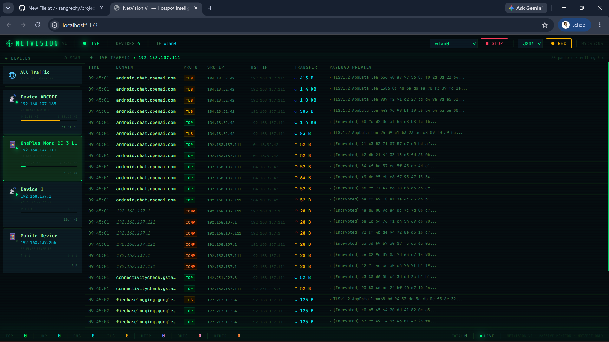
DASHBOARDEdge AI Wearable Health Monitor (Vital Monitoring System)
An ESP32-S3 wearable biomedical system capturing optical pulse, ECG waveforms, skin temperature, and motion. Features on-edge TinyML inference models for cardiac arrhythmia classification, streaming live telemetry over Bluetooth Low Energy (BLE) to a FastAPI WebSocket dashboard.
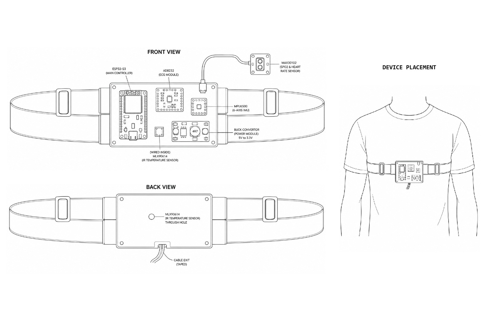
WEB DASHBOARD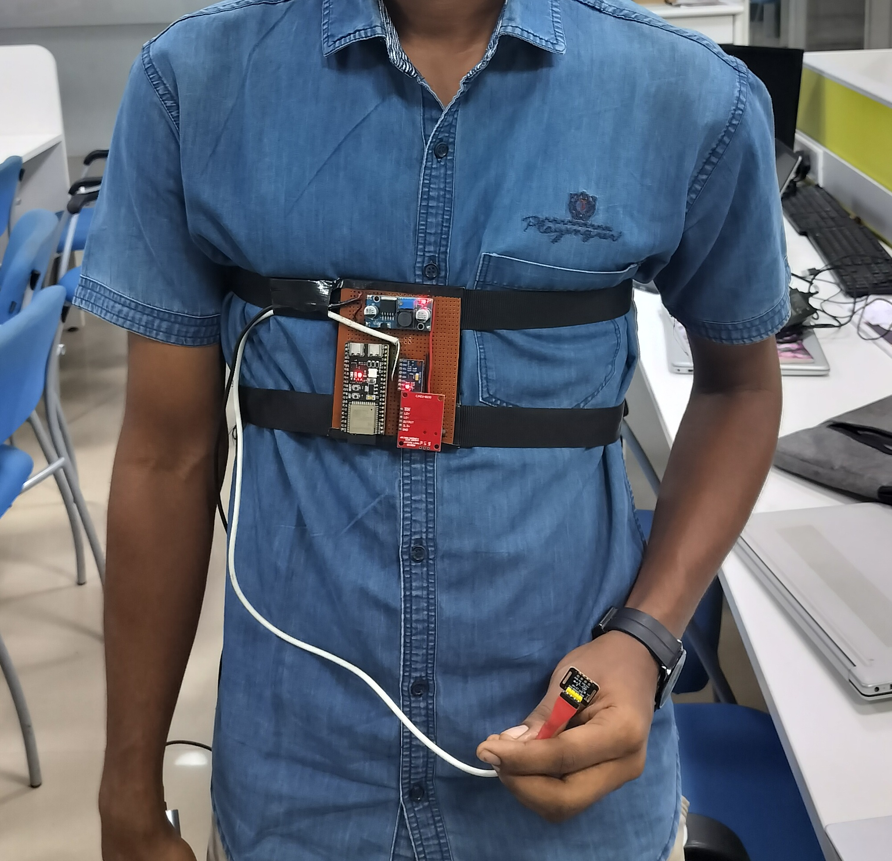
HARDWARE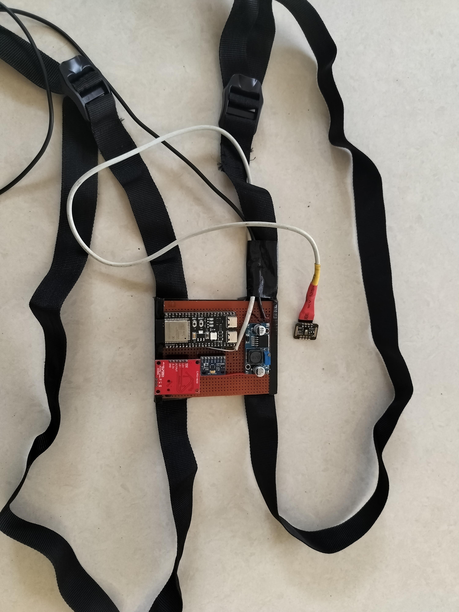
HARDWARE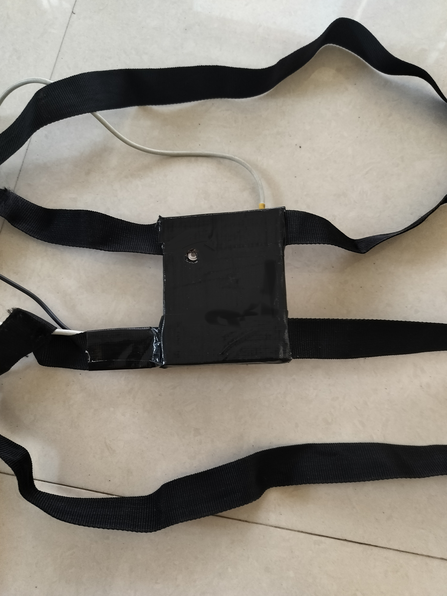
CIRCUITRY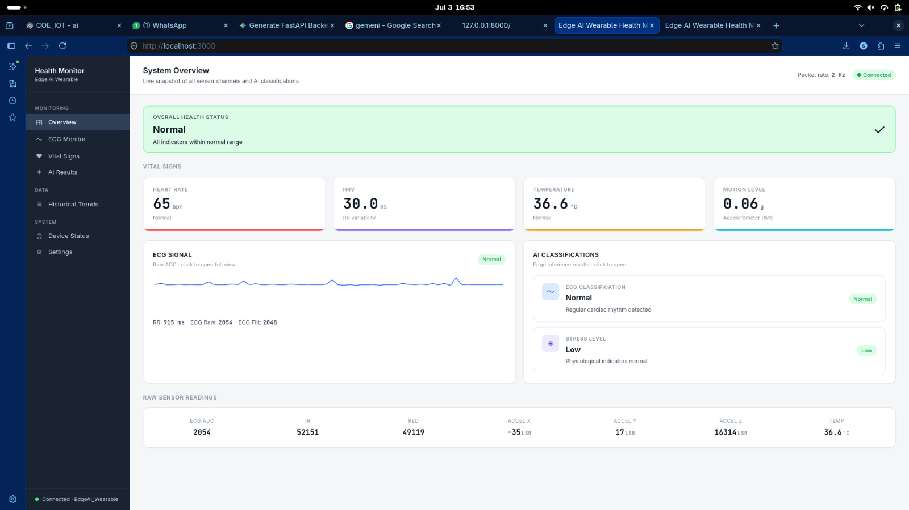
APP UI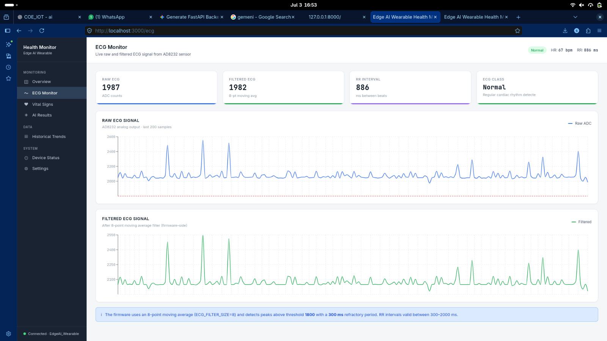
APP UI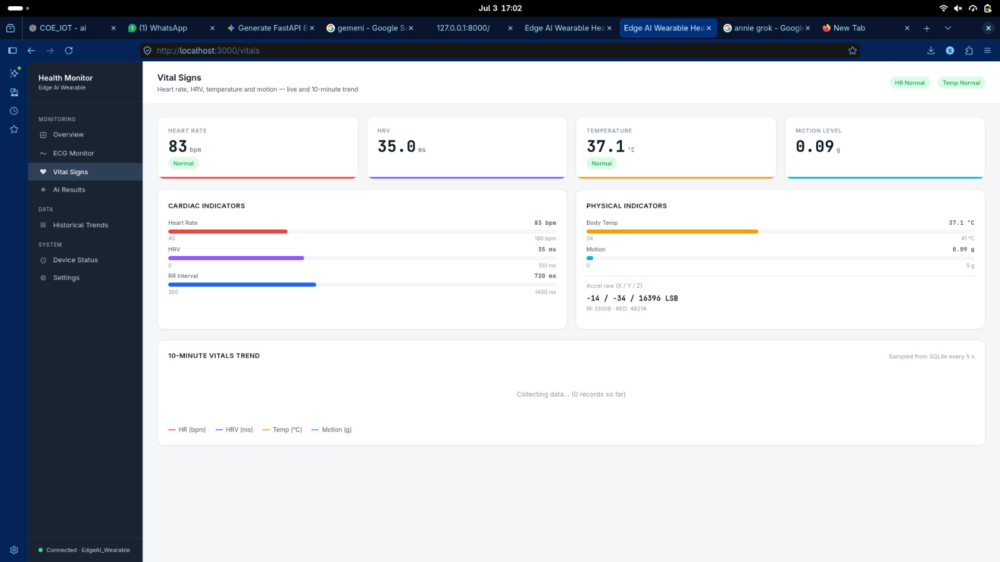
APP UI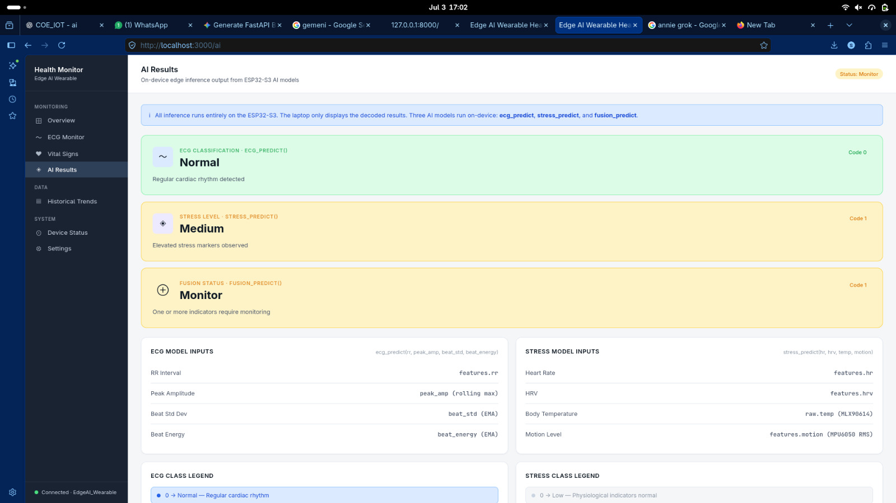
APP UIChargeLink — Smart Bypass Charger & Hardware Telemetry Station
An inline smart power management station designed around ESP32 and INA219 current/voltage sensors to analyze fast-charging handshakes, protect battery health with dynamic relay cutoff thresholds, and stream live telemetry to a custom Flutter mobile app over BLE GATT.
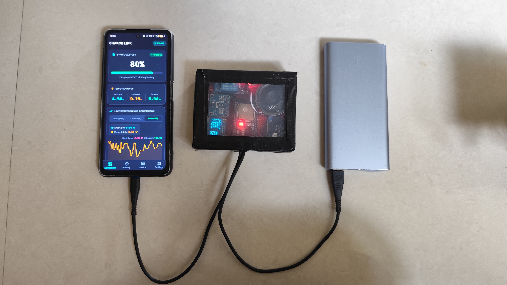
HARDWARE CIRCUITRY
CIRCUITRY
 HARDWARE
HARDWARE
 TESTBENCH
TESTBENCH
 TESTING
TESTING
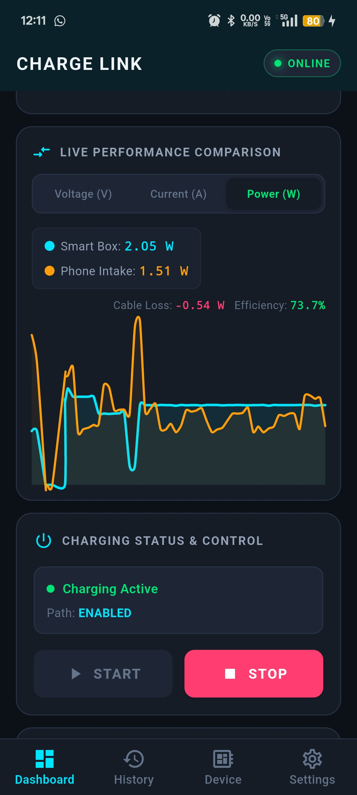
MOBILE APP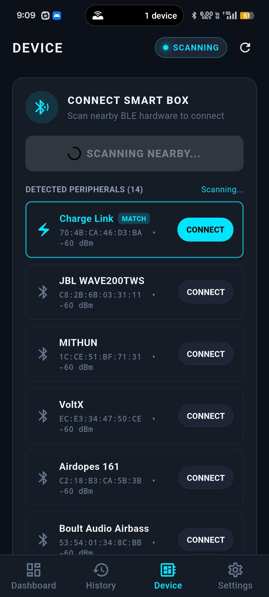
MOBILE APP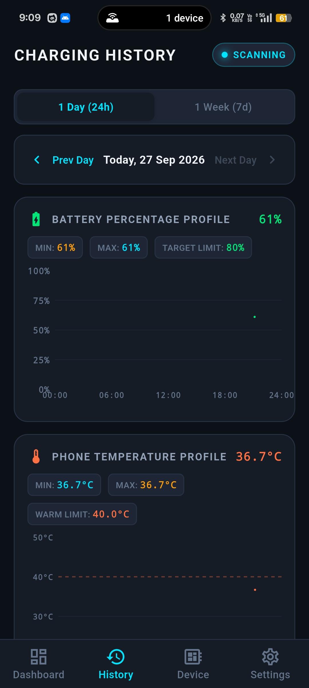
MOBILE APP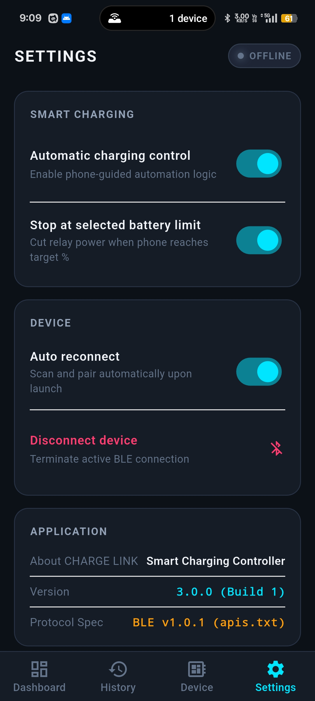
MOBILE APPRoad-Mounted IoT Flood Monitoring & Prediction System
An autonomous IoT system deployed on roadsides that monitors rainfall and rising water levels via ESP32. Sensor data streams into pre-trained machine learning forecasting models (depth forecast & flood severity classification), broadcasting live predictions and alert notifications to a real-time web portal.
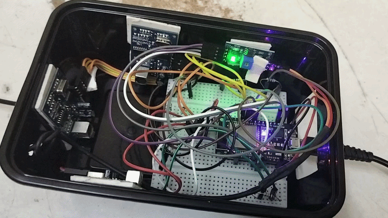
ANIMATION HARDWARE
HARDWARE
PetLink — AI Companion Robotic Rover
An autonomous robotic pet platform built upon a 4WD chassis with dual ESP32 microcontrollers, a 2-axis Pan/Tilt camera gimbal, and Python web control stream. Designed as an experimental testbed for real-time person tracking, responsive computer vision behaviors, and interactive companion robotics.
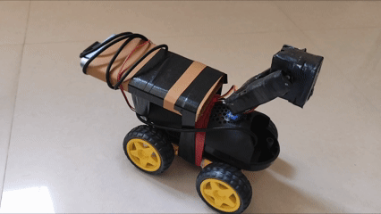
ANIMATION HARDWARE
HARDWARE
 ELECTRONICS
ELECTRONICS